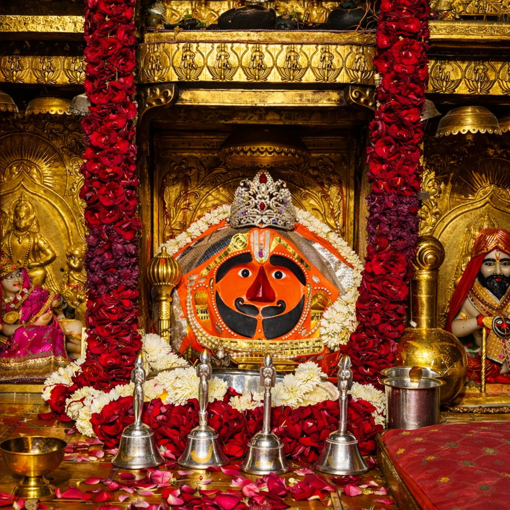
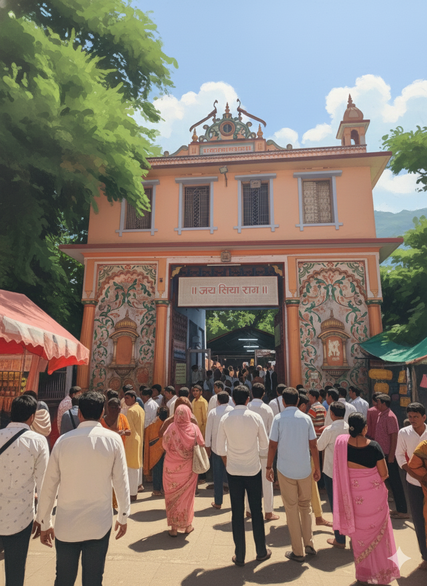
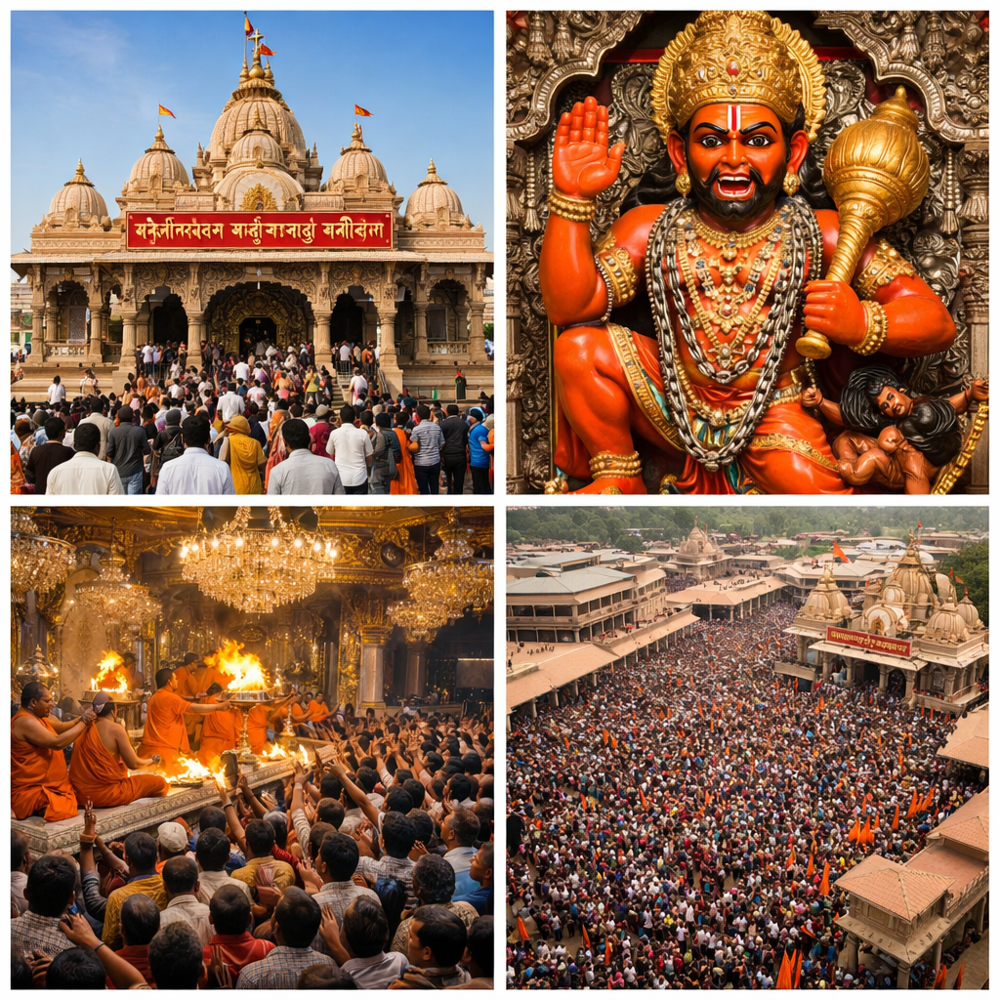
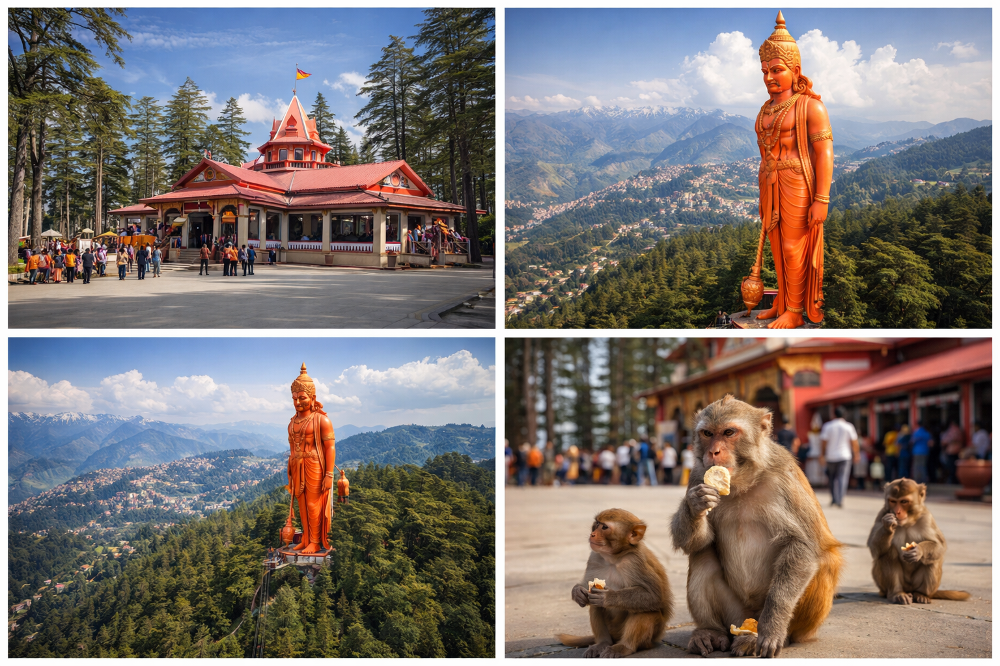
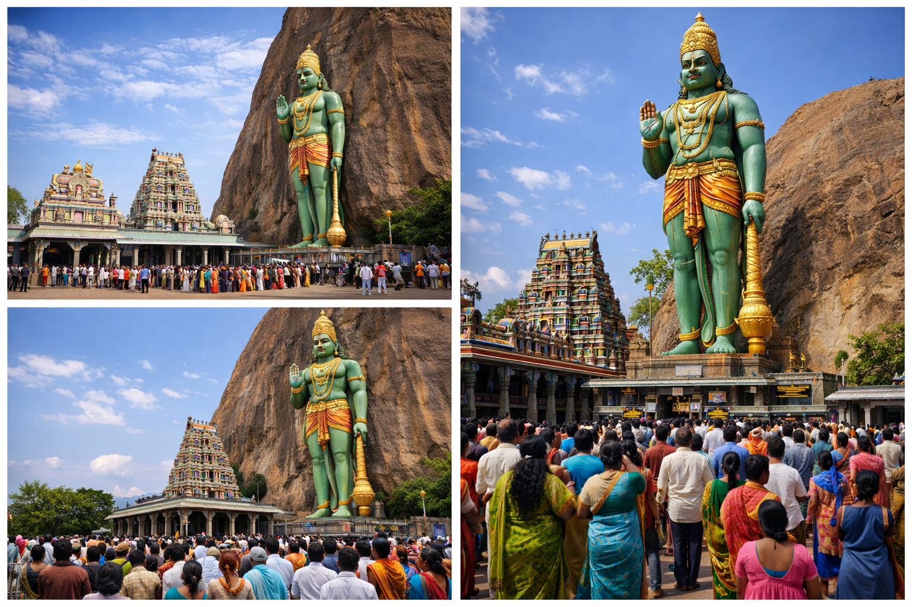
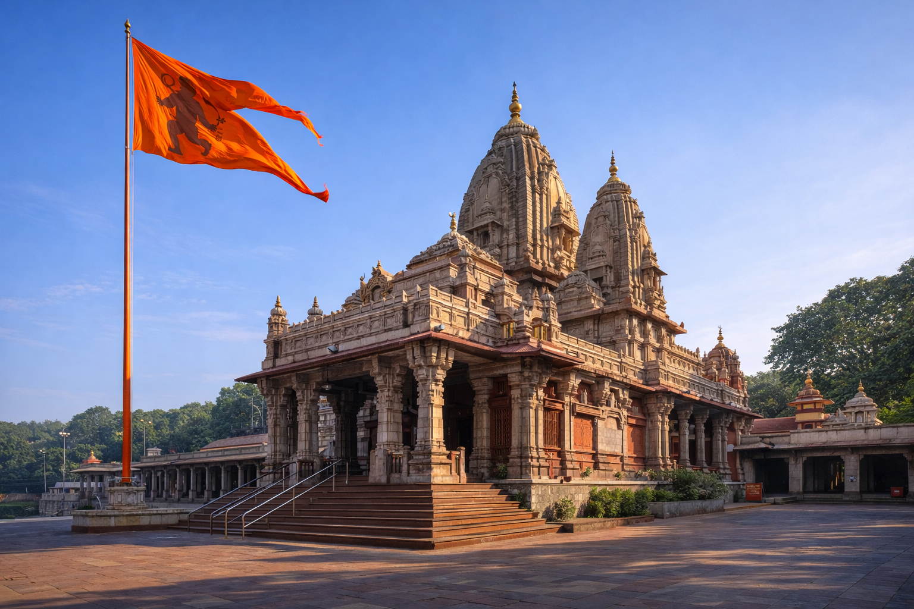
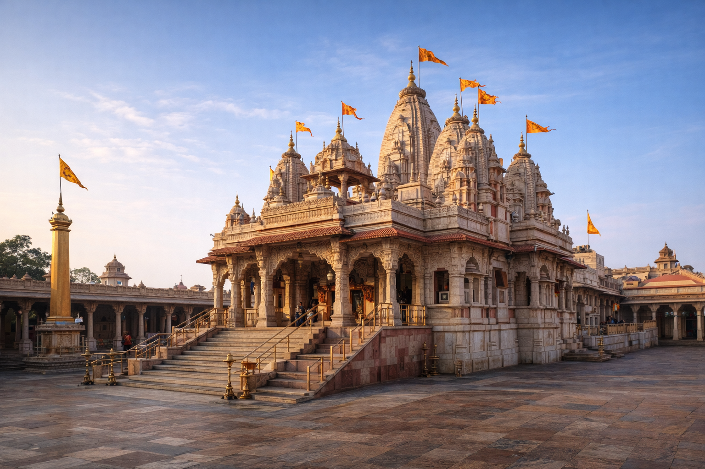
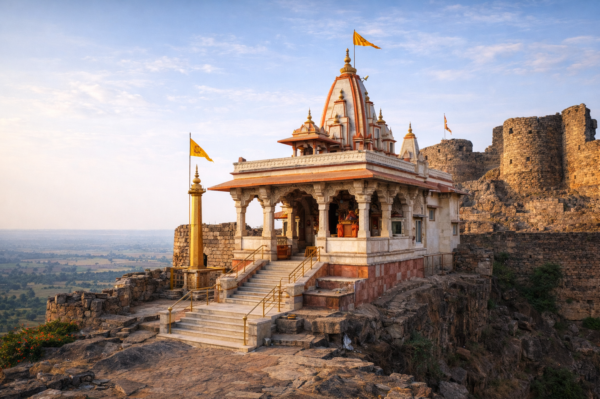

भारत के चमत्कारी मंदिरों की पूरी जानकारी
राम दर्शन से पहले यहाँ आना अनिवार्य माना जाता है

दाढ़ी और मूंछ वाले हनुमान जी की अनोखी प्रतिमा
ऊपरी बाधाओं और संकटों से मुक्ति के लिए प्रसिद्ध

गोस्वामी तुलसीदास जी द्वारा स्थापित प्राचीन मंदिर
यहाँ हनुमान जी की लेटी हुई विशाल प्रतिमा है

शनि दोष और बाधाओं से मुक्ति के लिए प्रसिद्ध

108 फीट ऊँची हनुमान जी की विशाल प्रतिमा

खुले आसमान के नीचे 18 फीट ऊँची प्रतिमा
दक्षिण भारत का प्राचीन और शक्तिशाली मंदिर

महाभारत काल से जुड़ा प्राचीन मंदिर
हनुमान जी का पंचमुखी स्वरूप यहाँ विराजमान है
पहाड़ से जलधारा निरंतर हनुमान जी पर गिरती है

महाभारत भूमि पर स्थित भव्य मंदिर

किले के ऊपर स्थित अद्भुत मंदिर
भारत के सबसे अधिक दर्शन किए जाने वाले मंदिरों में से एक
राम दर्शन से पहले यहाँ आना जरूरी माना जाता है